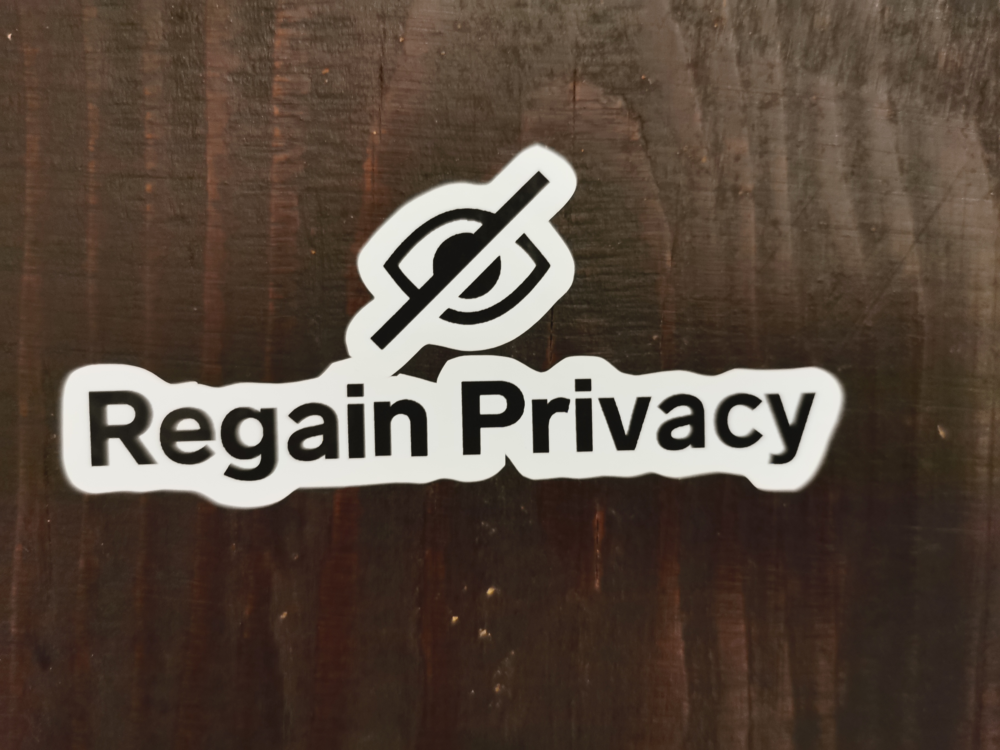

Chat control, the privacy nightmare that keeps coming back
Gregor Podjed
I am a 13-year-old student from Slovenia. I care about privacy and my future as an EU citizen, and currently the future is looking bleak. Wars, even more wars, homelessness, late stage capitalism and privacy nightmares.
What is chat control?
Chat control is a method that the European Commission has proposed for monitoring online communication. This is the third time they have attempted to implement it. It involves requiring technology companies to scan all chat messages and report them. While it has not yet been implemented, there is currently a law in place that allows providers to scan your messages. This is optional, so they are not forced to do so. It is worth noting that only a few unencrypted communication providers currently engage in this type of scanning, including Skype, Snapchat, Gmail, Facebook and Instagram Messenger, iCloud email and Xbox. Even end-to-end encrypted messaging apps would not be excluded from chat control, which could potentially undermine the entire point of it. The EU Commission also plans to include mandatory age verification, which would make anonymity harder to achieve
How could (or will) chat control affect individuals?
Chat control would allow your chats to be scanned, which could lead to you being falsely reported, because according to Swiss federal police authorities 80% of automatically generated reports are false.
A hacker could potentially spy on your conversations by using flaws in the way the government gathers conversations on chat apps and freedom of speech would not exist anymore on the internet, because all chats would be scanned and people would not be able to talk without constantly thinking if what they're saying would be permitted by the government. Without freedom of speech, democracy is gone
Chat control would, ironically, make illegal images or videos harder to track down. Criminals would be forced into using their own servers, which would be impossible to decrypt.
For example, if you were to send nude images of yourself, they would not only arrive to the intended recipient, but also to someone else, who you don't know and can't trust with private information.
Chat control would not affect criminals, at all. They would just use an illegal messaging service that doesn't do chat control, therefore the only group that would actually be affected would be non-criminals. Chat control would only make privacy online illegal and only harm those, who are not criminals. One example of this happening is when NSA employees shared nude pictures of people without consent.
Secure communication protects groups, that are frequently attacked, such as activists, LGBTQ+, politicians and journalists. Without the protection of secure communication chat control could be abused to cause further damage to these minorities.
What should be done about illegal material?
Finally, remember: privacy matters, to young people in EU and beyond
Sources
https://www.patrick-breyer.de/en/posts/chat-control/https://european-pirateparty.eu/parliament-approves-chatcontrol/